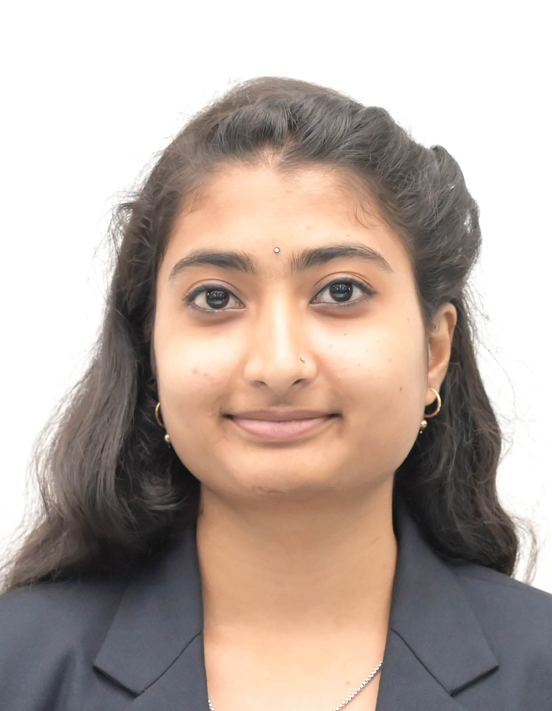

Aspiring AI & ML Engineer

I am a passionate and motivated individual with a strong interest in technology, innovation, and continuous learning. Currently pursuing my academic journey in the field of Artificial Intelligence and Machine Learning, I am driven by curiosity and a desire to build meaningful digital solutions that make a real-world impact. I have a keen interest in full-stack development, where I enjoy working on both the frontend and backend aspects of applications. I am constantly exploring new tools, frameworks, and technologies to enhance my skills and stay updated with industry trends. My ability to adapt quickly and my enthusiasm for learning have helped me take on new challenges with confidence. Alongside my technical skills, I value creativity, problem-solving, and attention to detail. I believe that building a great product is not just about writing code, but also about understanding user needs and delivering seamless, efficient, and user-friendly experiences. I enjoy working on projects that allow me to combine logic with creativity, whether it’s designing interfaces or developing functional systems. I am also deeply interested in expanding my knowledge in areas like IT management and business strategy, which is why I aim to pursue further studies in this field. My long-term goal is to build a successful career where I can contribute to innovative projects, grow as a professional, and create solutions that positively impact people’s lives. Beyond academics and technology, I value meaningful connections, teamwork, and personal growth. I believe in staying consistent, embracing challenges, and continuously improving myself both personally and professionally.